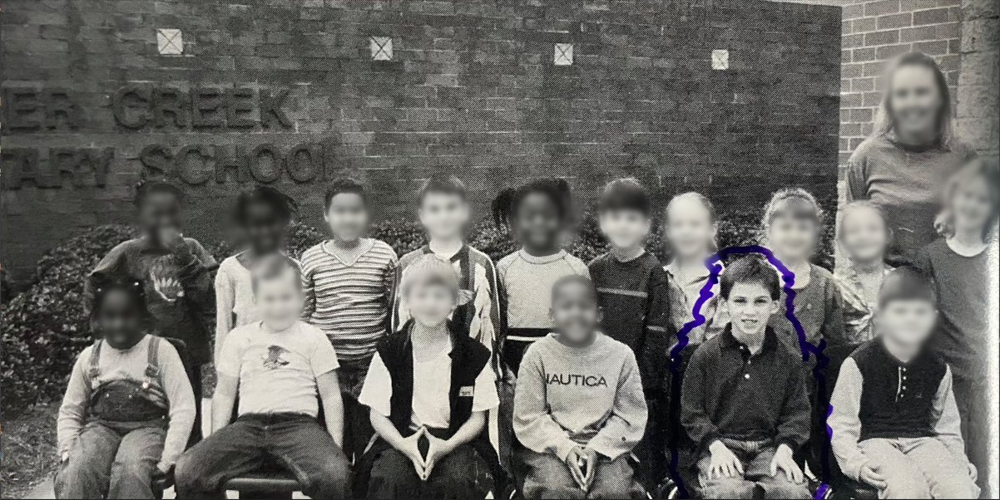
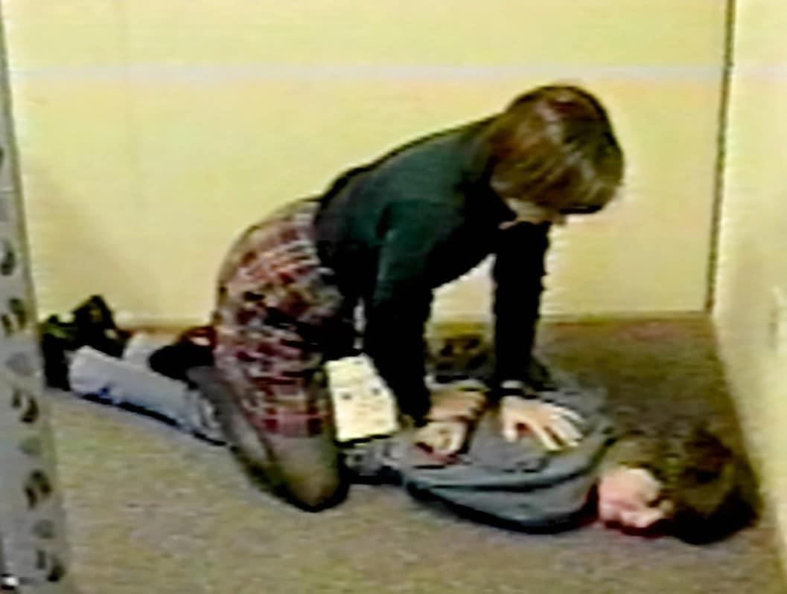
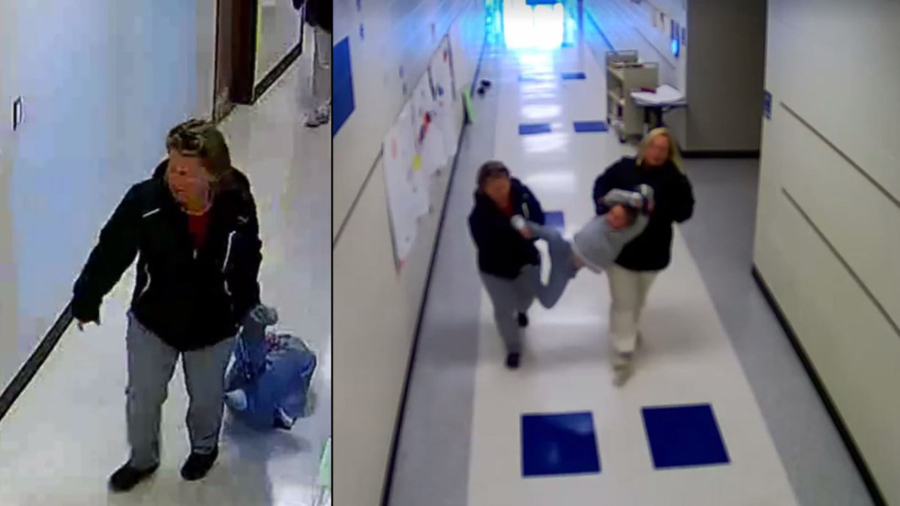
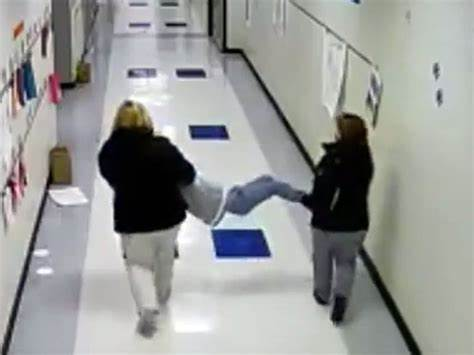
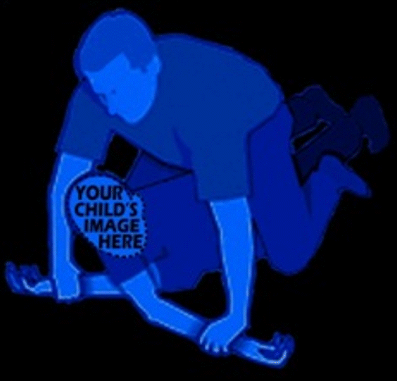
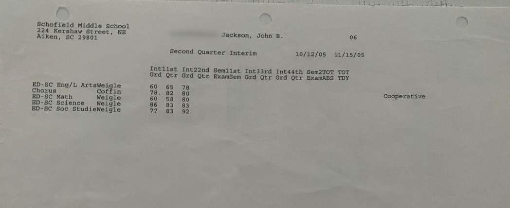
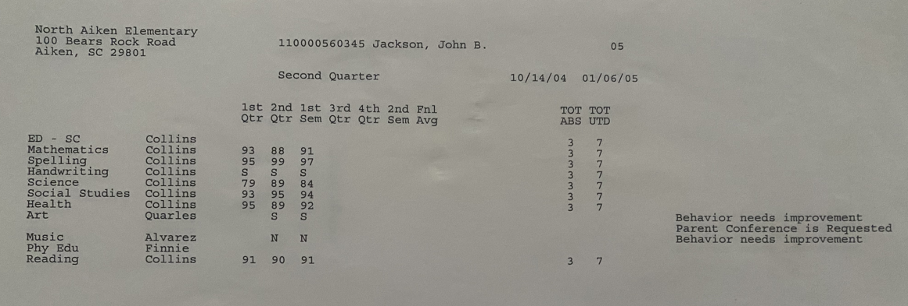
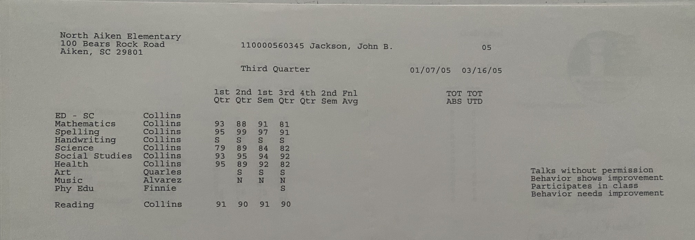
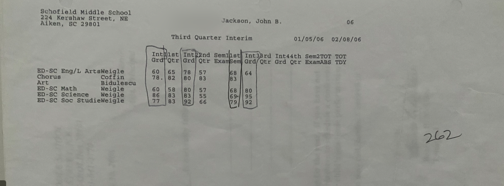
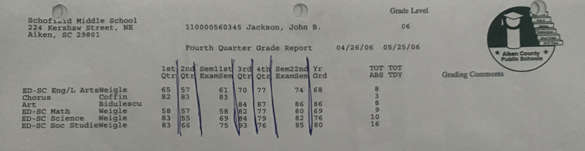

Welcome to My Website
Welcome to my website, where I share my experience as a former special education student at Aiken County Public Schools. I have been through a lot of trauma in these schools, including being placed in seclusion rooms, restrained, and assaulted. I want to shed light on the reality of how some students are treated in the public school system, and the impact it can have on their lives. My goal is to raise awareness and push for change. I believe that no child should have to endure what I went through. While I acknowledge that there are many dedicated educators and staff who work tirelessly to support their students, unfortunately, there are also some who fail in their duty of care. I hope that by sharing my story, we can work towards a future where all students, regardless of their special needs or background, can feel safe and supported in their schools. Thank you for taking the time to read my story.
About Me

My name is John. I am a survivor of traumatic abuse within the public school system. I am a former special education student at Aiken County Public Schools. I was degraded, humiliated, and assaulted inside of these schools. While I was in the public school system I recieved CONSTANT abuse. I have been placed in seclusion rooms, restrained and I have even been jumped by an entire class. The school district forced me to be in a room with gang members, sexual predators, an violent criminals. All while knowing that I was a non-violent person with no extreme behavioral issues. They did not document my abuse, Nor did they document how many times they had locked me in a seclusion room. They covered up the evidence and they lied about it! Every day I feared for my life on the way to school and while I was there. Teachers and staff working at these schools did NOT protect me from harm and even encouraged the abuse. often blaming it on my behavior to justify my mistreatment
These schools made a promise to me that I would have my diploma after everything I went through and they lied to me! At the school district office in North Augusta, they sat me down before I re-enrolled and looked me in my eyes promising me that I would graduate. They were sued for what they did to me and had to partially pay for my treatment center all the way on the other side of the country. I made it to 12th grade. I was a senior and had 3 months left until I graduated highschool with my diploma. This treatment center used child labor to operate, Nothing abusive, just hard work that builds character. IT WAS PHYSICALLY DEMANDING and yes, I excelled in academics because I had private tutors there and teachers who sat down one on one to teach me. I then had to return home, because the school would not pay for me to remain there for the 2 more years I needed to get help. My family could NOT afford the expense. Once I was home, I had to re-enroll with Aiken County Public Schools to finnish off my education and FINALLY graduate! As I recived my ID badge, I noticed there was no grade on my badge. I asked them, "WHERE IS MY 12?" They told me: "You are in 10th grade." I was devistated. I worked harder than any of you know out there at that treatment center... THEY HAD DROPPED ME TO THE GRADE I WAS IN BEFORE I LEFT. MAKING ALL THE YEARS I SPENT SUFFERING AND CRYING ALL ALONE FOR NOTHING! ALL THE EFFORT I PUT INTO MY SCHOOLWORK AND CHORES. ALL THAT SWEAT AND TEARS FOR NOTHING! It broke me. They put me in classes with children. A bunch of 14 year olds. I WAS 18.... How humilating. How degrading. You all tricked me... You added insult to the injuries you gave me... I remember the promise they made me vividly, WORD FOR WORD. I am quoting what the lady behind the desk told me exactly: "Mr.Jackson, we did not help you before.This time things will be different. We will make up for what we did to you. You WILL graduate, and we will help you get there!" What is even worse is I found out that they make money off of placing children in special education classes and claiming that they have special needs. They get THOUSANDS OF DOLLARS. I personally believe I didn't belong in special ed.I was VERY out of place in these classrooms and my problems were no where near as serious as these other students. I THINK THEY LABELED ME A SPECIAL NEEDS STUDENT TO COLLECT YOUR TAX MONEY AND RECIEVE THOSE GRANTS! They kept me in special ed not because I needed it but because they were reciving money from the federal goverment. They left me there, USING ME FOR THEIR FUNDING. It ties into OUR GOVERMENT AND BIG PHARMA. They refer us to doctors and give us diagnosis and they put us on mood altering drugs like ritalin. I was medicated as young as the age of 6! How does it not alter brain chemistry? A childs brain is still developing at that age, and chimically altering their brains could effect their healthy brain development
WHAT I WENT THROUGH IS EERILY SIMILAR TO AMERICAS MK-ULTRA MIND CONTROL PROGRAM.
THEY ARE RUNNING MK-ULTRA LIKE MIND CONTROL PROGRAMS OUT OF OUR PUBLIC SCHOOLS!
If you look into
You will learn that it is a TORTURE technique used by our intelligence agencies for dealing with terrorists, prisoners, and violent psychopaths.But...
THEY WERE USING THIS TORTURE METHOD ON CHILDREN!
Because of what has happened to me, I have faced countless hospital visits, stays at residential treatment facilities, and I have even been incarcerated.
Because of what has happened to me, I have a hard time trusting ADULTS and AUTHORITY figures.
IT ALL LEADS BACK TO THE SAME PLACE!
I would even say that the school system intends to create students that become apart of the prison system later on, because why else would they be locking us in these empty single cells? They obviously want us brainashed to be comfortable in these rooms and they want it normalized in our minds so that we do not question it to change their money making system. AND OF COURSE THE PRISON SYSTEM MAKES YOU ALL PAY TAXES FOR WHEN WE MAKE THE TRANSFER FROM SCHOOL TO PRISON. They get paid for putting us in prison like they get paid to hold us against our will in public schools. THINK ABOUT THAT. Everything is connected.
Updates
March 20,2023 I contacted the Justice Department with my abuse claims and filed a report.
The Truth
This is EXACTLY how they treated me!
I wasn't acting out!
I did NOTHING to deserve it.



Now what if this was your child? Would it change anything?
People make choices. You have a choice. You can ignore it all- write it off as crazy or some sort of conspiracy therory,
But what you should be doing is trying create a change and be a voice to those who can't be heard.
WHERE DID THESE ABUSES TAKE PLACE?:
There are two locations.100 Bears Rock Rd, Aiken, SC 29801
224 Kershaw St NE, Aiken, SC 29801
I also witnessed children being locked in seclusion rooms at Chuckercreek Elementary school.
I can draw maps of every school I have been to and locate where the abuses occured on the map.
WHERE IS MY PROOF?:





As I have said before, they more than likely covered up all of my abuse, seeing as they did not inform my parents of the times when they had restrained me, put me in the seclusion rooms or when I was assaulted by another student. I STILL HAVE MY IEP(Individualized Education Program) to prove I was a special ed student, and my report cards as well as other items and documentation to prove I was there. As for my bad grades, it was impossible to focus and get work done in these classrooms because there was constant FIGHTING, BULLYING, really what they called "horse playing" or just fooling around and creating distractions. You can see the difference in my GPA by comparing my grades from my treatment center VS these useless public schools. I was a straight A student at my treatment center, only because I had one on one help, and little to no distractions. I got good grades ALL THE TIME! Aiken County Public Schools always told lies about me and made me seem like a bad kid. I believe they did it to keep me in special education classes and because they had a personal problem with me that I can't understand or something more sinister. THE REASON WHY WE ARE HERE TALKING ABOUT THESE PEOPLE AND THESE SCHOOLS IS BECAUSE THEY WASTED DECADES OF MY LIFE, LEFT ME DISABLED AND UNABLE TO CARE FOR MYSELF. NOW I CANNOT FUNCTION IN SOCIETY BECAUSE OF MY PTSD. THEY HELPED MAKE MY CHILDHOOD A MISERABLE EXPERIENCE.
Links
Here are some useful links and information.
CNN reports on the use of prison cells to detain students against their will in schools.
Student hangs himself in school seclusion room.
A mother files a lawsuit for Aiken County Public Schools Detaining and holding her son in a cell.
A mother files a lawsuit for Aiken County Public Schools Detaining and holding her son in a cell.
A mother files a lawsuit for Aiken County Public Schools Detaining and holding her son in a cell.
A mother files a lawsuit for Aiken County Public Schools Detaining and holding her son in a cell.
A mother files a lawsuit for Aiken County Public Schools Detaining and holding her son in a cell..
Seclusion rooms in schools do more harm than good, experts say
Students Are Still Being Put in School Seclusion Rooms
National Data Confirm Cases Of Restraint And Seclusion In Public Schools
How Some Schools Restrain Or Seclude Students: A Look At A Controversial Practice
Solitary Confinement is Appallingly Common In Public Schools
Seclusion rooms, also known as "isolation rooms," are spaces that are designed to keep individuals confined and separated from others. While these rooms are often used in mental health facilities, schools, and correctional facilities to manage disruptive or violent behavior, they have been criticized for their potentially harmful effects. Here are some of the harmful effects of seclusion rooms:
Physical harm: Seclusion rooms can pose a physical danger to the individual being confined, as they may try to escape or harm themselves while in the room. In some cases, individuals have suffered injuries, including bruises, cuts, and broken bones, while in seclusion.
Emotional harm: Being confined to a seclusion room can cause emotional distress and trauma, especially for vulnerable individuals such as children or those with mental health issues. It can lead to feelings of isolation, helplessness, and anxiety, which can exacerbate existing mental health conditions.
Stigmatization: The use of seclusion rooms can stigmatize individuals who are confined, making them feel like they are being punished or labeled as dangerous. This can have long-term consequences, including decreased self-esteem and difficulty reintegrating into society.
Lack of privacy and dignity: Seclusion rooms often lack basic amenities such as toilets, running water, or proper ventilation, which can lead to poor hygiene and discomfort. This lack of privacy and dignity can contribute to feelings of shame and humiliation.Ineffective treatment: Seclusion rooms are often used as a means of control rather than treatment, and studies have shown that their use is not effective in improving behavior or reducing violence in the long term. Instead, more humane and evidence-based approaches, such as trauma-informed care and positive behavior support, are recommended.
It's important to note that the harmful effects of seclusion rooms can vary depending on the individual's age, mental health condition, and the duration and frequency of confinement. Overall, seclusion should be used as a last resort, and alternative approaches that prioritize safety, dignity, and respect for the individual should be considered first.The amount of federal grant money given to public schools can vary greatly depending on the specific grant program and the needs of the schools applying for funding. The U.S. Department of Education offers numerous grant programs that provide financial assistance to schools for various purposes, such as improving teacher quality, increasing student achievement, and promoting innovation in education. Some of the largest federal grant programs for K-12 education include Title I, which provides funding to schools with high percentages of low-income students; Title II, which supports professional development for teachers and school leaders; and IDEA, which provides funding to support students with disabilities. The amount of funding for these programs can also vary from year to year, based on the federal budget and other factors. It's best to check with the U.S. Department of Education or your state education agency for the most current information on federal grants for public schools.
Contact Me:
I WANT JUSTICE FOR WHAT WAS DONE TO ME!
Care to help?
my contact info
email: contactjohnjackson@protonmail.com
Always be sure to keep your promises!
This website was made with the help of CHATGPT in the year of 2023!
And if you were wondering what CHATGPT had to say about all of this, it said that what happened to me is disgusting. If an AI knows what happened to me is wrong, how come nobody seems to want to help me get justice? That is SHAMEFUL.